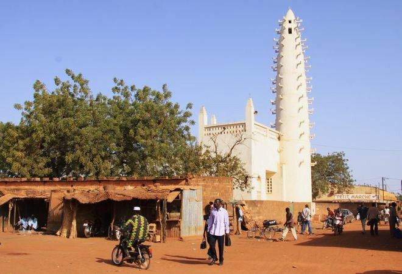
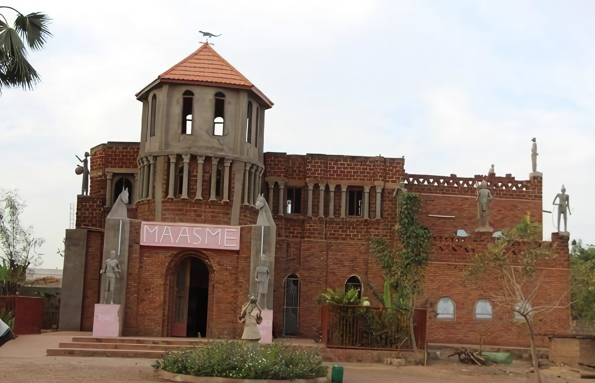
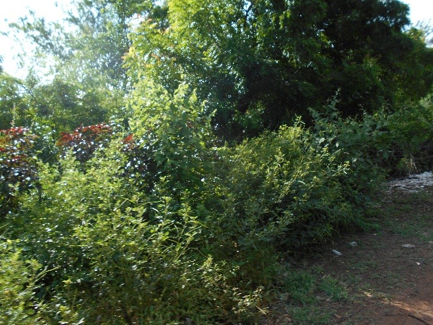
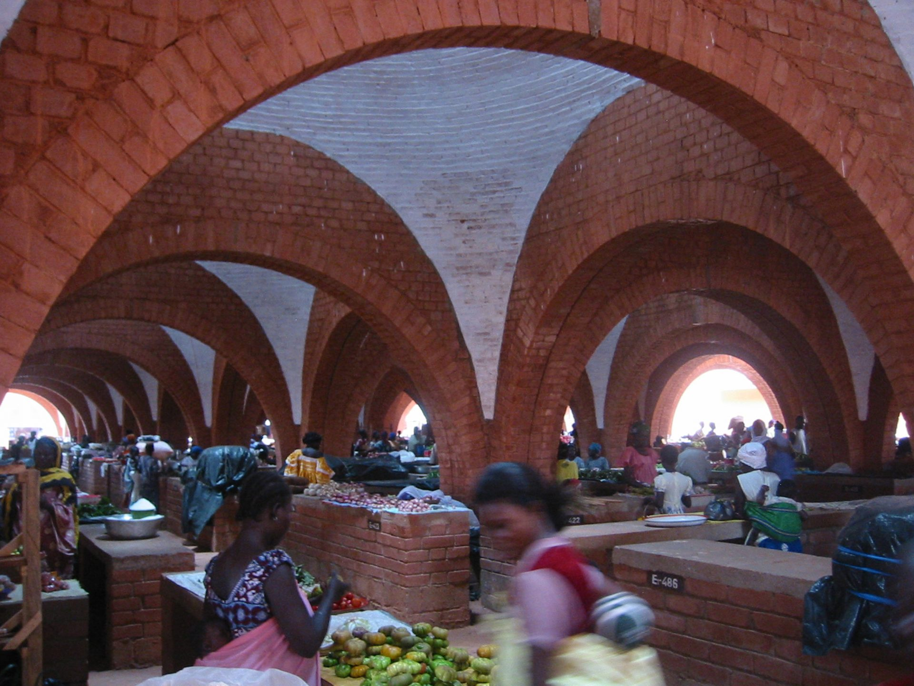
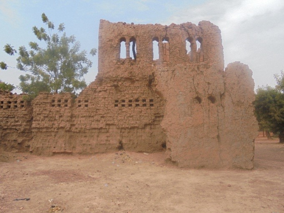
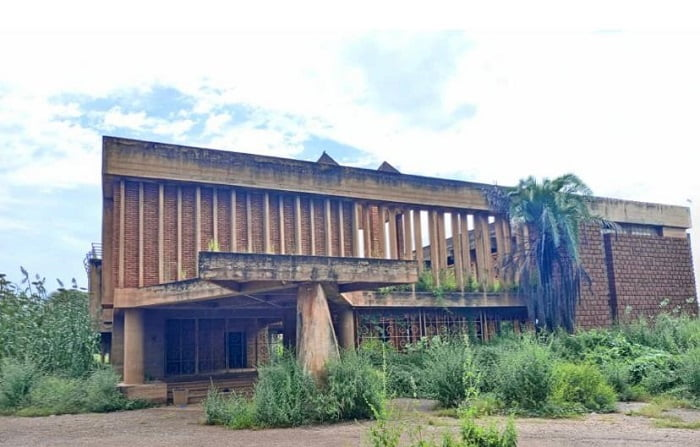
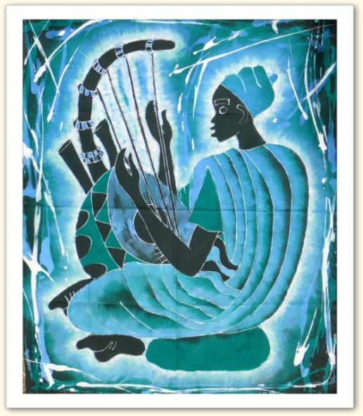
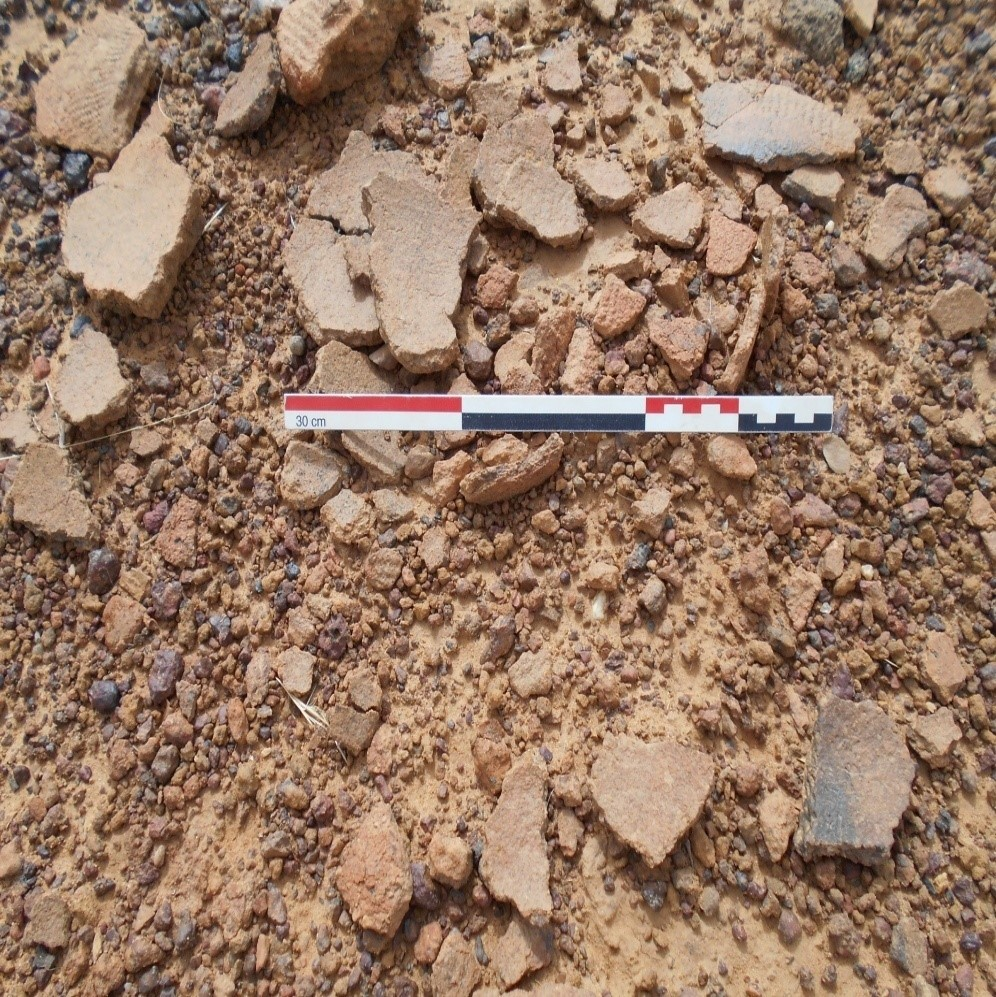
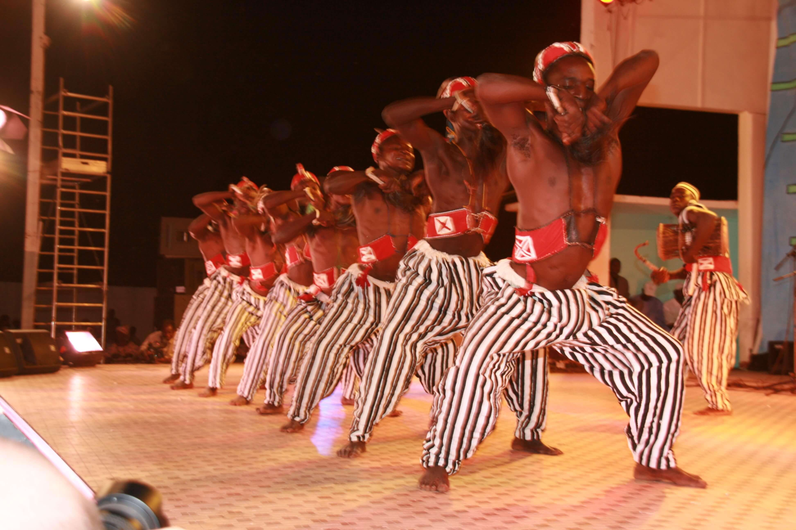
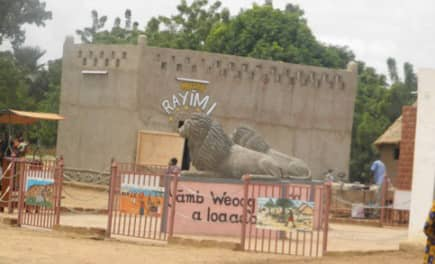

Acceuil
Patrimoine
Reservation d'hôtel
Galerie
DIFFERENT PATRIMOINES DE LA VILLE DE KOUDOUGOU

Grande Mosquée de Koudougou

MAASME

Les Bois sacrés de Koudougou

Marché central

Ruine du Palais du LAARLE NAABA

Palais de Maurice YAMEOGO

Cité d'art

Buttes anthropiques de Koudougou

Danse Traditionnelle

Musée de Rayimi